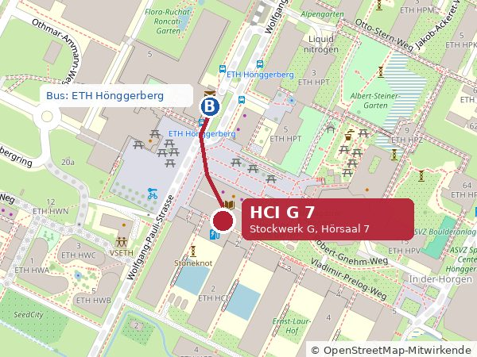

Einladung
Benjamins Doktortitel-Verteidigung
Mittwoch, 2. Dezember 2026
ETH Zürich, Campus Hönggerberg · Gebäude HCI, Stockwerk G, Hörsaal G 7
Bitte bis 11:45 im Hörsaal sein.
Der Vortrag beginnt pünktlich um 12:00. Wer später kommt, wartet bitte vor der Tür, bis der Vortrag vorbei ist (ca. 12:20). Benjamin zuliebe.
Ablauf
- 11:45Eintreffen im Hörsaal G 7
- 12:00Öffentlicher Vortragca. 20 Minuten
- 12:20Apéro im Foyer vor dem HörsaalBenjamin ist währenddessen in der Prüfung
- ~14:30Bekanntgabe des Ergebnisses, Dank und Doktorhut
- ~15:30Gemütlicher Ausklang
Anreise

Von der Bushaltestelle „ETH Hönggerberg“ sind es zu Fuss etwa 2 Minuten bis zum HCI.
Am besten mit dem ÖV bis zur Haltestelle „Zürich, ETH Hönggerberg“. Parkplätze auf dem Campus sind knapp und kostenpflichtig.